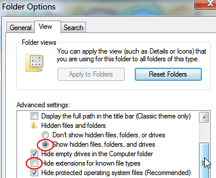

- It is important to know the location of the log file and the configuration file, opencpn.conf (Linux) or opencpn.ini (Windows), on your computer. If you ask questions on the forum, there is a fair chance that you will be asked about the content in these files. Once you get familiar with OpenCPN, have a look at the files!
- Through out this documentation there will be many references to the configuration file, as it often is possible to change the default settings. This is an advanced subject once you are familiar with OpenCPN. All editing in the config files must be done with a text-editor, such as “notepad” in Windows, or notepad++.
- The configuration file is where all data, that needs to be persistent between sessions, are stored. The logfile keeps tab of what's going on in the current session.
- To find the locations of the files go to the ToolBar click on “About OpenCPN”, the button looks like a blue book with a “?” on the cover. Look at the bottom of the “About” Tab, highlighted below. The illustration below is from a Win XP. A quick way to view the logfile is to copy the full file path and then paste this into the address field in a web browser.

- For quick copying of the opencpn.ini and Log files use the two “Copy” buttons. This is useful for publishing on the forum if asked to do so. Please use the Forum “Code” button before pasting, as this guarantees an exact copy.
- On Linux the “opencpn.log” is in your home directory.
The “opencpn.conf” is in a hidden directory, called “opencpn”, also in your home directory.
For a quick way to view the files you can try these commands.
$gedit `echo $HOME/opencpn.log`
$gedit `echo $HOME/.opencpn/opencpn.conf`
Of course you can swap “gedit” for your favorite editor.
- On Windows 8, Windows 7, Windows 2000, XP and Vista the two files are more difficult to find, so use the “About” dialog as described above. On many windows installs the folder containing the logfile will also be hidden, so you need to change your systems “Folder Options” to show it.
For example, the C:\ProgramData folder is by default hidden in Windows 7. Here's how to get to it. To access it you need to un-hide it by doing the following:
- Go to Control Panel > Folder Options
- Switch to View tab
- Select “Show hidden files, folders and drives”.
- Unselect “Hide extensions for know file types” to get this state:

Now you will be able to find your logfile.
On Mac OS X , the logfile, “opencpn.log” , is in / Users/ “user name” /Library/Logs/ and the “opencpn.ini ” is in the / Users/ “user name” /Library/Preferences/opencpn/ directory.